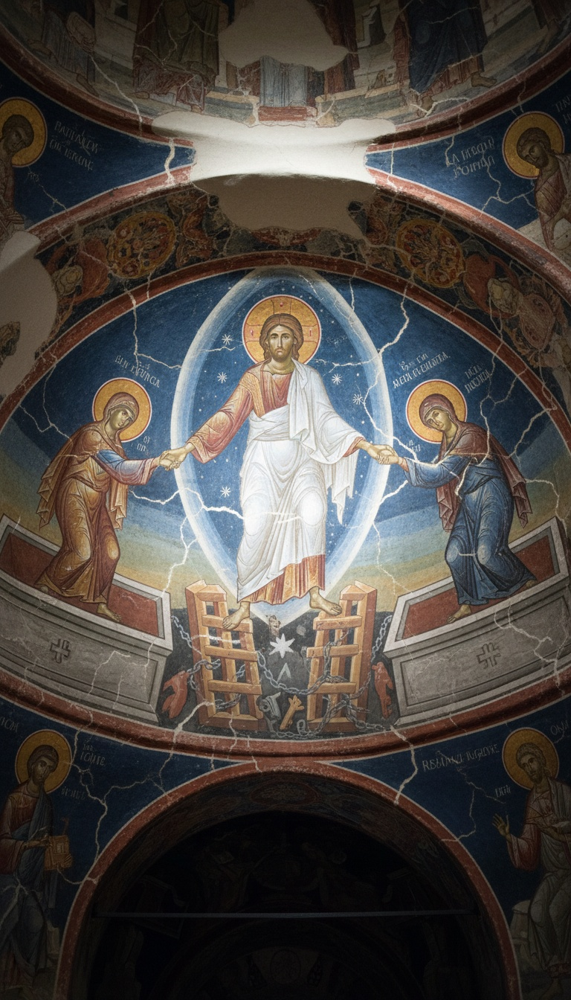

The Bible never names the two men crucified beside Jesus. A banned gospel names both of them, then follows Jesus straight down through the floor of Hell.
The book is the Gospel of Nicodemus, called the Acts of Pilate in its oldest Greek copies. It gives the thieves their names. It puts two dead men's sworn statement on the record. It also gave Eastern Christianity the image it paints on every Easter icon, while the text itself stayed outside the canon.

The Names the Four Gospels Left Blank
Mark 15:27 says two robbers were crucified with Jesus, one on his right and one on his left. In Luke 23:39-43 one of them mocks him and the other begs, “Jesus, remember me when you come into your kingdom.” Jesus promises that man paradise the same day. Four gospels and two crosses, and nobody gets a name.
The Acts of Pilate fills in the blank. The man on the right is Dysmas. The man on the left is Gestas. Gestas sneers that if Jesus is the Christ he should save all three of them. Dysmas rebukes him and asks to be remembered. The scene follows Luke beat for beat, this time with the names.
The Church took the name. The penitent thief is venerated as Saint Dismas and commemorated in the Roman Martyrology on March 25. In 1941, inmates at Clinton Correctional Facility in Dannemora, New York, finished building the Church of St. Dismas, the Good Thief, with their own hands. Luke tells the story, Nicodemus names the man, and Rome makes him a saint under the name from the banned book.
Rome Was Fighting Over This Book in 155 AD
Justin Martyr wrote his First Apology to Emperor Antoninus Pius around 155 AD. In chapters 35 and 48 he tells the emperor to check the facts of the crucifixion in “the Acts which were recorded under Pontius Pilate.” He cites it the way you cite a court file, as a record in the emperor's own archive.
Tertullian went further around 197 AD. In chapter 21 of his Apology he writes that Pilate, already a Christian in his own conscience, sent a full report on Jesus to Tiberius. Then in 311 and 312, Emperor Maximinus Daia struck back. Eusebius records in book 9 of his Ecclesiastical History that Maximinus circulated forged Acts of Pilate full of blasphemy and ordered schoolteachers to make children memorize them.
Textual scholars date the surviving Greek text to the fourth century and file it as late pious fiction. That date belongs to the manuscript, and the record is older. An emperor forges a counter-document only when the original is already loose and doing damage. Justin pointed an emperor to the Acts of Pilate two centuries before our copy was written. The book was in circulation long before the canon was closed.
Two Dead Men Walk Into the Council
The second half of the Gospel of Nicodemus survives in Latin as the Descensus Christi ad Inferos. It opens in Jerusalem after the resurrection. Joseph of Arimathea tells the priests that Jesus rose with company. He names two of the risen: the sons of Simeon, the old man who held the infant Jesus in the Temple in Luke 2. The Latin text calls them Karinus and Leucius.
Annas, Caiaphas, Nicodemus, Joseph and Gamaliel find the brothers alive in Arimathea and bring them into the synagogue in Jerusalem under oath. The two men make the sign of the cross, ask for paper, and write their testimony in separate rooms. When the council compares the pages, they match letter for letter. Then the brothers are gone.
That is a sworn statement, written twice, cross-checked, and handed to the same council that condemned Jesus. The book builds its own chain of custody.
The Gates of Bronze Shattered
Here is what the brothers wrote. They were in the darkness of Hades with Adam, the patriarchs and the prophets when a golden light broke across the dead. Isaiah stood and named it. John the Baptist arrived to announce who was coming behind him. Satan and Hades began fighting over who had let this happen.
Then a voice like thunder: “Lift up your gates, O princes, and the King of Glory shall come in.” That is Psalm 24, shouted at the door of Hell. Hades ordered the bronze gates shut and the iron bars bolted. David answered from among the dead with Psalm 107: he has broken the gates of bronze and cut the bars of iron in two.
The gates of bronze shattered and the iron bars were crushed. The King of Glory had Satan bound and handed him over to Hades. He stretched out his right hand, seized Adam, and raised him up. Every saint in the dark walked out behind him, and the archangel Michael led them into paradise.
At the gate of paradise they met Enoch and Elijah. A third man stood with them, carrying a cross on his shoulder. It was the thief from the right-hand cross. The book that names Dysmas at Golgotha puts him at the door of paradise, first man in.
Christ grips Adam by the wrist and drags him out of the grave. That scene comes from a book shut out of the Bible, and it is painted over the altar.
The Fresco Over the Altar in Istanbul
Walk into the Chora Church in the Edirnekapı district of Istanbul and go to the side chapel, the parekklesion. The statesman Theodore Metochites commissioned its frescoes between 1315 and 1321 as his own funerary chapel. The half-dome over the apse holds the Anastasis.
Christ stands in white inside a star-flecked mandorla. He grips Adam by the wrist with one hand and Eve with the other, and hauls both out of their tombs. Under his feet lie the two broken leaves of the gates of Hell. Locks, keys and bolts are scattered across the black. Satan lies bound in the pit. Each of those details is a line from the Descensus. The building became a mosque in 1511, a museum in 1945, and a mosque again in May 2024. The fresco is still there.
The same scene fills the eleventh-century mosaics at Hosios Loukas in Greece and Nea Moni on Chios. It opens the Last Judgment wall of Santa Maria Assunta on Torcello in the Venetian lagoon. Fra Angelico painted it in cell 31 of the Convent of San Marco in Florence in the 1440s. In the Orthodox world it is the Easter icon. The most recognized image of the resurrection in Eastern Christianity is an illustration of the Gospel of Nicodemus.
The Hole in Matthew This Book Fills
Matthew 27:52-53 says that when Jesus died the tombs broke open and many bodies of the saints were raised. After his resurrection they went into the holy city and appeared to many. Matthew then moves on to the guards at the tomb. The canon leaves their names, what they saw, and where they went blank.
The rest of the New Testament points to the same gap. 1 Peter 3:19 says Christ went and preached to the spirits in prison. 1 Peter 4:6 says the gospel was preached to the dead. The Apostles' Creed, in the form Rufinus of Aquileia recorded around 404 AD, has congregations say every Sunday that he descended into hell. That is three statements that the descent happened, and only one book describes it.
The Gospel of Nicodemus answers Matthew line by line. The risen saints were Adam's line, freed from Hades. Two of them walked into the council in Jerusalem and gave their statement in writing. When Athanasius of Alexandria fixed the 27 books of the New Testament in his Festal Letter of 367 AD, their statement stayed outside.
The Church kept the thief's name and made him a saint. It kept the descent and put it in the creed. It kept the picture and painted it over altars from Istanbul to Venice to Florence. What it shut out was the testimony of the two men who came back from the dead and wrote down what they saw.
The brothers wrote their pages in separate rooms, handed them over, and vanished. The council that took those pages was the same council that had Jesus killed. What else did those pages say that nobody was meant to read? Why would the Church keep the fresco and bury the book? Tell me in the comments what you think the brothers wrote.
Before you go
7 books the Vatican doesn't want you reading. Free PDF — the texts they cut, with sources. Joined by 140+ Inner Circle members.
No spam. Unsubscribe anytime.
Go deeper
The Hidden Canon, Vol. I — Enoch. Jubilees. Thomas. Mary. Judas. 90 pages, 14 chapters, every receipt cited. The books your Bible quietly removed.
Read the Canon →Books that informed this investigation
As an Amazon Associate, Hidden Epoch earns from qualifying purchases. Cost to you: nothing.
Research safely
The VPN we use to research without being tracked. First 3 months free.
Get NordVPN →